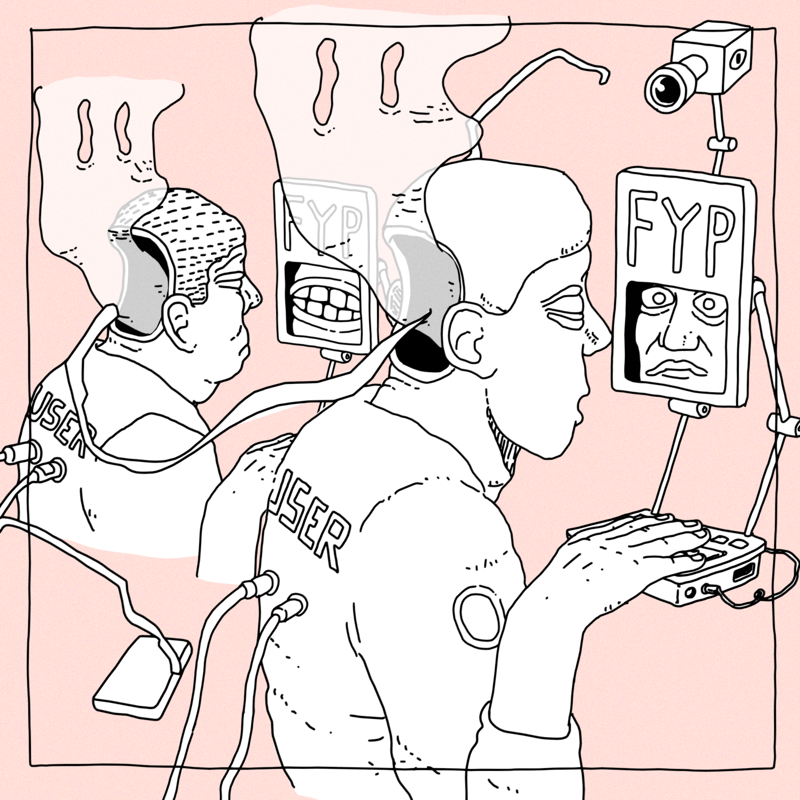
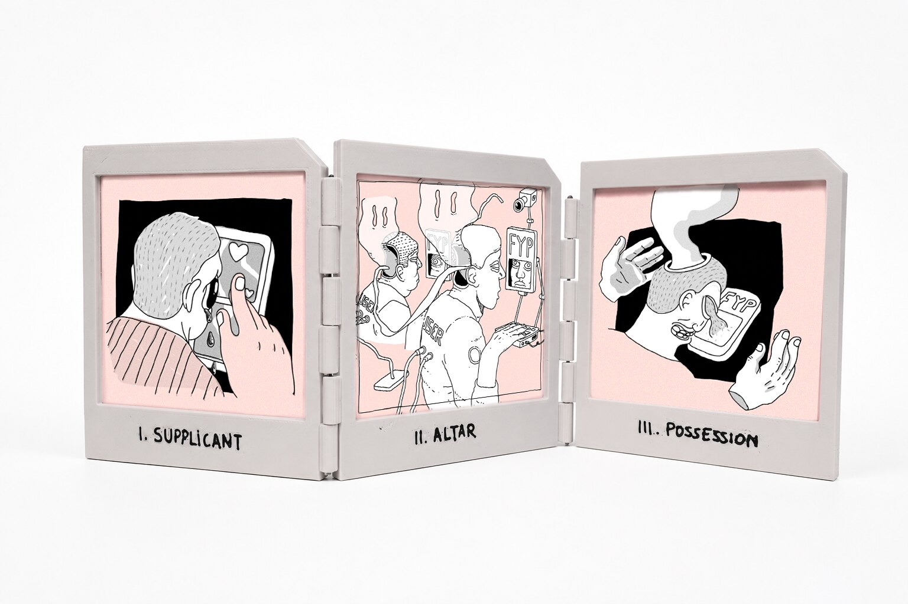
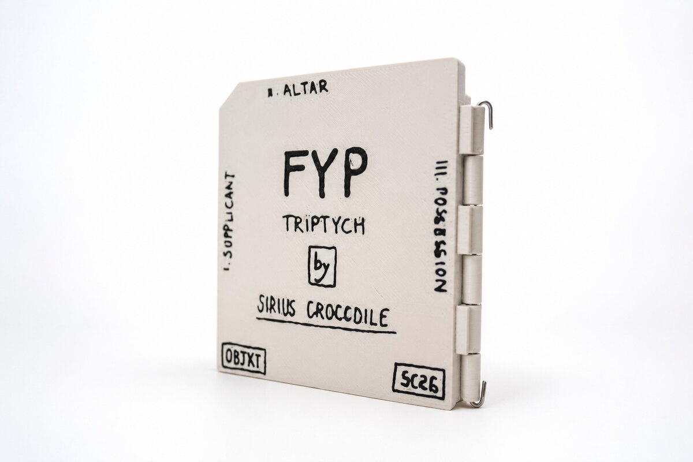
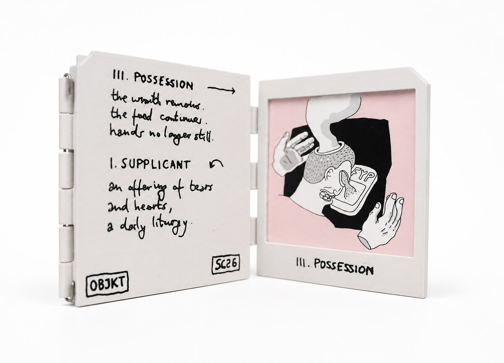
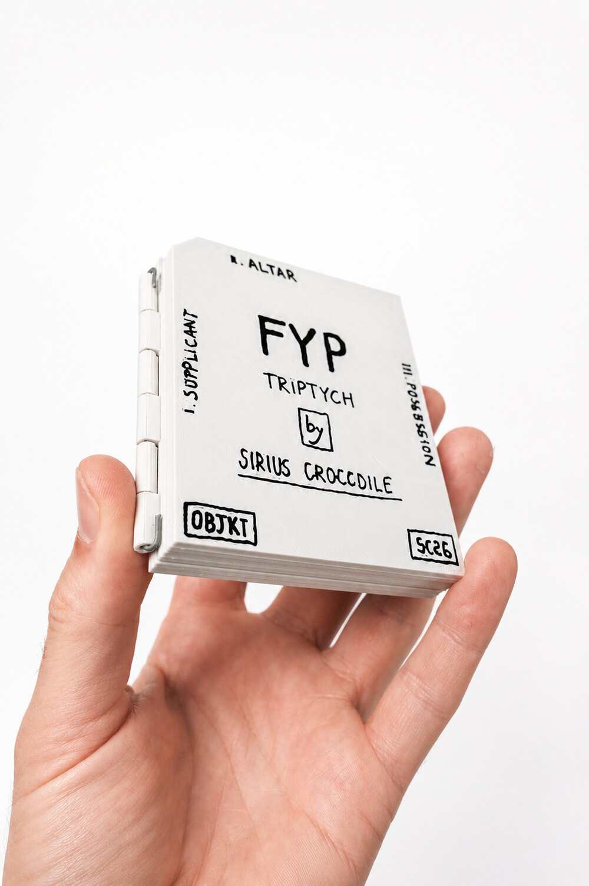
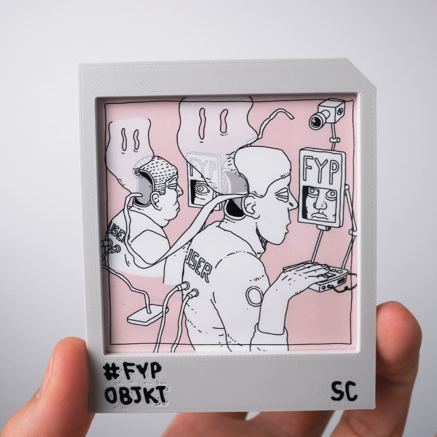
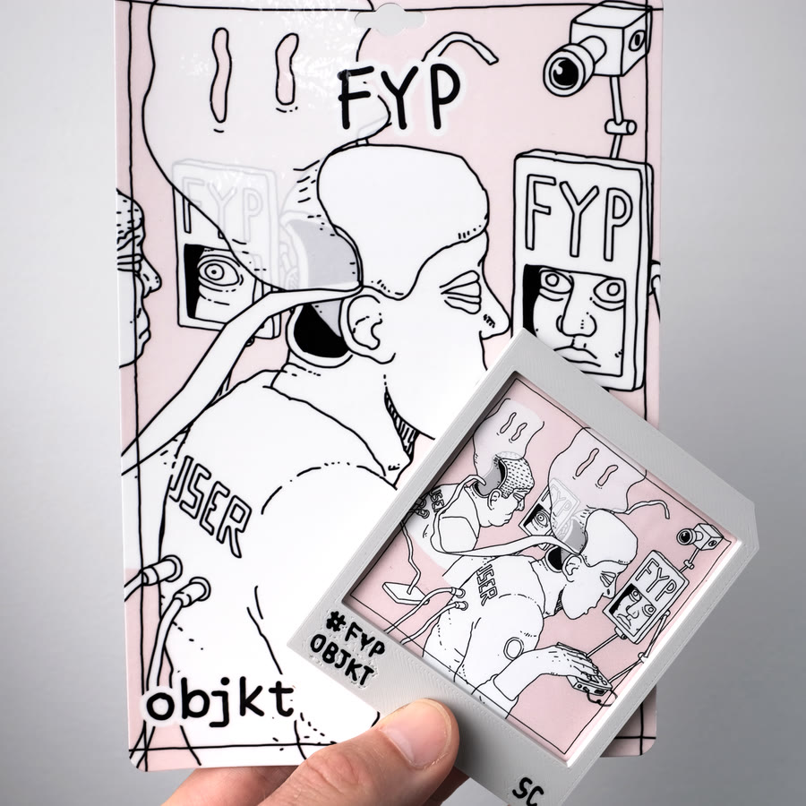
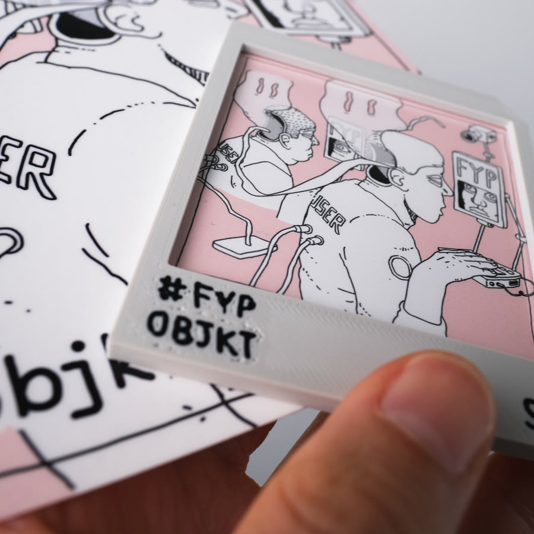

1 / 1
I
Supplicant

the FYP triptych an altarpiece for the algorithm
II. Altar the altar of the algorithm.
the doors open mint auction begin
Holder's reward the complete set
A hand-held altarpiece — 3D printed and finished by hand. Awarded in full to the single collector who holds all three panels of the FYP triptych: I. Supplicant, II. Altar, and III. Possession.




Each panel of the altarpiece carries its own NFC tag. Tap a panel and it opens the collectible — the object in your hand and the work on-chain, bound one to one.
ii. altar — the open edition center of the fyp triptych.
We sacrifice our time and attention on the altar of the algorithm. We are looking for emotions, a dream, a new version of ourselves, distraction, relief. Plugged in, zoned out. Users.
i. supplicant & iii. possession — the flanking panels of the fyp triptych.
An offering of tears and hearts, a daily liturgy.
the wraith remains. the feed continues. hands no longer still.
Holder's reward open edition
Mint II. Altar, hold through the snapshot, and enter the draw for 3D printed collectibles — hand-finished pieces raffled among holders of the open edition.



Canonical links live on the artist's socials and on objkt.